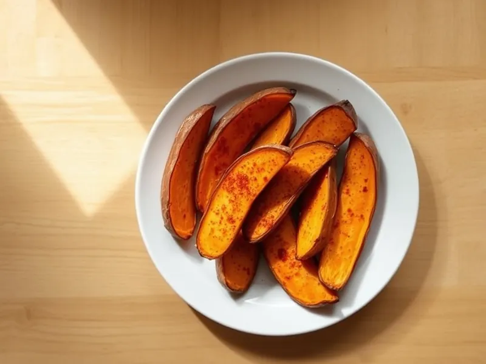

Батат дольками в духовке с паприкой
Дольки сладкого картофеля с паприкой и чесноком, запечённые до хрустящих краёв
40 мин4 порц.245 ккал на порциюБ 3 · Ж 8 · У 41Американская кухня
Открыть в приложении: порции, таймеры, список покупок
Продукты на 4 порц.
- Батат4 шт
- Оливковое масло2 ст. л.
- Паприка1 ч. л.
- Чеснок1 зуб.
- Соль1 ч. л.
- Перец чёрный молотый1 щеп.
Как готовить
- Разогрейте духовку до 200 °C (сильный жар).
- Вымойте батат щёткой и нарежьте вдоль дольками толщиной 1,5 см, кожуру можно оставить.
- Смешайте масло с паприкой, измельчённым чесноком, солью и перцем, перемешайте с дольками.
- Выложите дольки на противень с пергаментом в один слой кожурой вниз.
- Запекайте 25-30 минут, перевернув через 15 минут, пока края не станут хрустящими, а середина мягкой.
Совет. Батат пригорает быстрее картофеля из-за сахара, поэтому следите за ним в последние 5 минут.